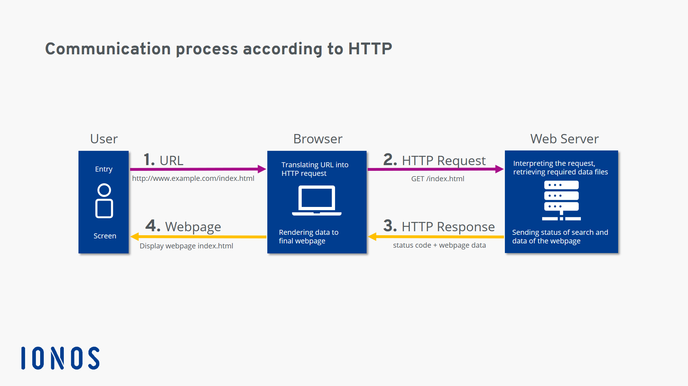

HTTP is the foundation of data communication for the World Wide Web. It is a protocol used by web browsers and web servers to communicate and transfer data.
HTTP operates on a request-response model, where a client (usually a web browser) sends a request to a server, and the server responds with the requested resource, such as an HTML page, image, or data.
HTTP is a stateless protocol, meaning that each request is independent and does not retain information about previous requests. However, it can be extended with additional features, such as cookies and sessions, to enable stateful interactions between clients and servers.
HTTP is commonly used for accessing websites, APIs, and other web-based services. It is an essential protocol for the functioning of the internet and the World Wide Web.